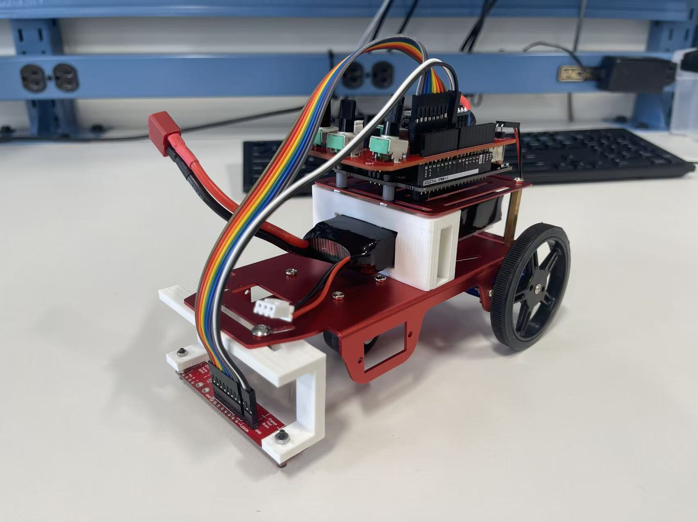
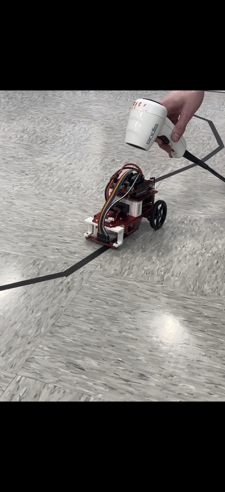

Robot in action
Line-Following Robot demonstration · Open video separately
Challenge
Our team assembled and programmed a robot to follow a black tape course and respond to additional sensor inputs. The work required translating sensor measurements and software parameters into consistent motion on a physical surface.
My contribution
I worked with teammates on assembly, programming, calibration, and testing. I designed a sensor mount in SolidWorks and fabricated it in PLA, then helped iterate the mount and control parameters based on physical tests. The robot platform and some sensor and motor-control code were supplied through the course.
Mount design and calibration
The first mount did not position the sensor at the required ground clearance. We revised the geometry and tested readings over different tape colors and the floor. These tests showed why threshold values depend on sensor height and surface reflectance and need to be recalibrated after a mechanical change.
Control tuning
We adjusted line-detection threshold, motor speed, turn ratio, off-wheel direction, and drive time. Turn ratio was particularly sensitive: changes affected both turning radius and the ability to recover the line. We used repeated course trials to tune the interaction between sensing and motor commands.
Temperature and speed inputs
We added a temperature sensor so the robot ran above 40°C and stopped below 40°C. A potentiometer provided manual speed adjustment: its analog reading was normalized by 1023 and multiplied by the configured starting speed.
Results and limitations
The robot completed the line-following course, and the temperature cutoff and potentiometer speed adjustment operated successfully in our tests. Following remained slow and was not consistently smooth. The project strengthened my understanding of calibration, code debugging, motor control, and the gap between software behavior and physical performance.
